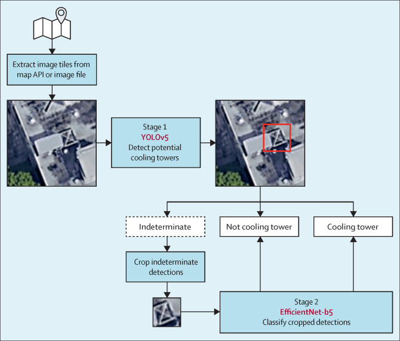
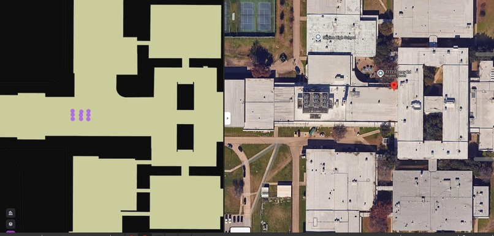

RainCollect
An tool that uses satellite imagery, deep learning, and open financial data to surface opportunities for Grundfos water reuse systems.
Richard Wang · Allison Neely
 Unsplash
Unsplash
Finding the right building is difficult and time consuming.
- Physical: Is this roof large enough? Does it have a cooling tower that demands ongoing water treatment?
- Financial: What do local utilities charge? Are there stormwater fees, tax credits, or rebates that change the ROI?
- Priority: Out of thousands of commercial buildings in a city, which 50 should a rep call on this quarter?
Where every number comes from
OpenStreetMap and Overpass API
Building footprints as GPS polygon geometries. Queryable live from the browser with no API key. Provides roof geometry, building type, floor count, and contact tags used throughout the scoring formula.
Open-Meteo Archive
Five-year historical daily precipitation (2019–2023). Chosen over NOAA CDO because it requires no registration, has no rate limits, and returns JSON in a single call. Averaged to annual inches per location.
Water Utility Rates
State-level water and sewer cost per thousand gallons, sourced from EPA WaterSense surveys and the UNC Environmental Finance Center. Overridden by city-specific data where available.
Google Maps Static API
Satellite tiles at zoom 19, approximately 0.3 metres per pixel, 640×640 pixels centered on each building centroid. Used exclusively as input to the computer vision pipeline, not for map display.
Stormwater and Incentive Data
Per-city stormwater fees in dollars per square foot per year, state tax credits, and rebate programs. Researched from TCEQ, DSIRE, and municipal open data portals and stored in a curated reference file.
WRI Aqueduct and Water Stress Index
City-level water stress scores on a 0–5 scale. Used in the ESG sub-score to quantify supply risk. Cities like Phoenix score high, raising the strategic value of any conservation measure installed there.
Five signals, one number
Each component is normalized 0–100, then combined using adjustable weights. The rep can shift weights in real time — emphasizing water cost for a Philadelphia pitch, or roof size for a logistics park in Dallas.
Default weights — fully adjustable per audit in the UI.
Roof area on a log scale
A 100,000 sqft warehouse and a 1,000,000 sqft distribution center are not the same opportunity. Log normalization separates meaningful differences at the high end without distorting the middle of the range.
Regulatory sub-score breakdown
A state tax credit contributes a flat 40 points. Stormwater fees contribute 0–40 points proportional to the dollar-per-sqft rate. Rebate programs contribute up to 20 points. Jurisdictions with all three score maximum.
ESG score by building type
Hospitals score 85, universities 90, hotels 75 — they face strong ESG reporting pressure. Warehouses score 35. They care about operating cost, not sustainability commitments. The model reflects that difference.
How we detect cooling towers
YOLOv5 — object detection
Downloads a 640×640 satellite tile per building. Strips the bottom 4% copyright bar. YOLOv5x returns bounding boxes with confidence scores. The model was trained on 2,051 images containing 7,292 labelled cooling towers.
EfficientNet-B5 — confirmation
Confidence below 0.25 is discarded. Above 0.65 is accepted directly. For the range in between, the detection is cropped and classified by EfficientNet. This second stage eliminates false positives such as water towers and architectural features.
Precise geolocation
The bounding box center is mapped back to latitude and longitude using the tile's geographic extent and zoom-level ground resolution — approximately 0.3 metres per pixel at zoom 19. Each tower gets its own pin, not the building centroid.

From satellite imagery to structured detections

The model turns imagery into building geometry and point detections, aligned with satellite imagery for verification. Model limitations include roofs with complex shadows and fans that point to the side.
Model Training
We had the training notebook and the Roboflow dataset URLs cited in the paper.
We reproduced the training setup on Google Colab: YOLOv5x backbone, batch size 16, 100 epochs, 640px image resolution, using three merged Roboflow datasets covering New York City, Philadelphia, and New York State.
The resulting weights match the published architecture and produce detection results consistent with the paper's reported performance. 95.1% sensitivity and 90.1% positive predictive value.
Every choice made deliberately
| Technology | Role | Why this, not the alternative |
|---|---|---|
| React + Vite | Frontend | Vite's dev server starts in under 300 ms. React's component model makes live-scoring sliders and map layer toggles straightforward to wire without full re-renders. |
| Deck.gl + MapLibre | Map rendering | Deck.gl renders 500+ building polygons at 60 frames per second using WebGL. MapLibre provides a free dark-mode basemap. Together they handle 3D extrusion, scatter layers, and GeoJSON overlays natively. |
| Zustand | State management | Redux adds ceremony with no benefit here. Zustand is 1 KB, has no boilerplate, and supports computed selectors. The entire audit state lives in one store. |
| Overpass API + Open-Meteo | Live data | Both are free and require no API keys. The complete live audit pipeline — geocode, buildings, precipitation, score — runs in the browser with zero backend infrastructure. |
| YOLOv5x + EfficientNet-B5 | Computer vision | The exact architecture used and validated by the CDC TowerScout paper. EfficientNet-B5 was selected by the original team after ablation across B0–B7. We reproduced the same setup for comparable performance. |
| Flask + PyTorch | CV microservice | The ML models run in Python. Flask wraps them in a /detect endpoint the React frontend can POST building centroids to. Local hosting keeps the Google Maps API key off any public server. |
From city selection to signed contract
Ten pre-loaded cities
Dallas, Phoenix, Miami, Philadelphia, Austin, Tyler, Denver, Atlanta, Seattle, and Los Angeles are scored and loaded on app open. The rep starts working in under three seconds, with no waiting for API calls.
Live audit — any US city
Type any city name. The engine geocodes it via OpenStreetMap Nominatim, pulls building footprints from Overpass, fetches five years of precipitation, looks up local utility rates, scores every qualifying building, and renders the results on the map — typically in under 30 seconds.
Building detail panel
Click any building to see its score broken down by component, estimated annual water savings in gallons and dollars, ROI payback estimate, building type and floor count from OSM, contact information where available, and a direct Google Maps link for field verification.
Live score weight tuning
Five sliders adjust the component weights in real time. Moving the Water Cost weight from 20% to 40% causes every building on the map to re-rank instantly. A rep can tailor the model to a specific market without touching any code.
Cooling tower layer
Toggle to overlay small blue dots at the precise latitude and longitude of each detected cooling tower. Dots are pickable — hover to see the YOLO confidence score, the EfficientNet confirmation result, and the source building identifier.
Permit pipeline layer
A separate overlay shows active commercial construction permits as amber markers. These surface buildings that do not exist yet — a rep in the room while mechanical systems are being designed is there before competitors know about the project.
The reasoning behind the choices
The numbers behind the opportunity
Potential per-building yield — Dallas
- Dallas receives approximately 34 inches of rain per year
- A 100,000 sqft roof yields roughly 180,000 gallons per year
- At $7.50 per thousand gallons: approximately $1,350 in annual savings at the minimum qualifying size
- Buildings over 500,000 sqft — common in industrial zones — yield over $6,700 per year from rainwater alone, before cooling tower reclaim is factored in
What the rep gains
- 500+ scored and ranked buildings per city, ready to act on in under 30 seconds
- Precise cooling tower locations rather than a building-level flag
- Forward intelligence on permits — opportunities before the building exists
- A live score model that adapts to any market condition without code changes
The walkthrough, beat by beat
The problem, made visceral
"This is how a Grundfos rep works today." Show Google Maps, a measuring tool, a spreadsheet. "Three days per prospect, and most never convert."
The reveal
Switch to the app. Select Dallas. Map flies in. "In seconds, 500 candidate buildings. Color equals Viability Score."
Drill down
Click the highest-scoring building. Sidebar opens. Score breakdown, 180,000 gallons per year estimated catchment, estimated annual dollar savings, Google Maps link for field verification.
Live score tuning
Pull the Water Cost slider up. "Philadelphia has three times the water cost — watch what happens." Buildings re-rank live. "The model adapts to the market."
Cooling tower layer and permit pipeline
Toggle cooling towers. Dots appear at precise tower locations. Toggle permits. "These markers are buildings that don't exist yet. We're in the room when they're designing the mechanical room."
The close
"Satellite finds the prospect. The score proves the ROI. That is the number a CFO will sign off on. This is RainCollect."
RainCollect
"There is a possibility in every drop."
Satellite imagery locates the physical opportunity. Open financial data proves the ROI. The scoring model adapts to any market. Together they replace a three-day manual process with a thirty-second answer.
OpenStreetMap · Open-Meteo · TowerScout / CDC · Deck.gl · React + Vite · Flask + PyTorch · WRI Aqueduct · EPA WaterSense